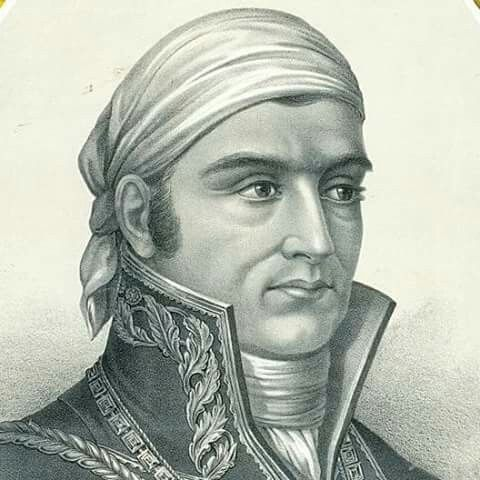
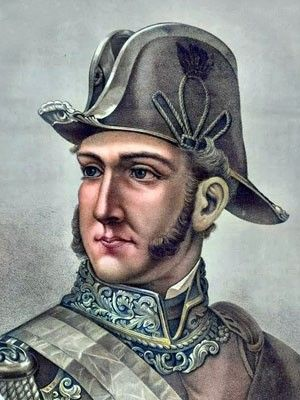

Miguel Hidalgo
Miguel Hidalgo y Costilla nació el 8 de mayo de 1753 en la hacienda de San Diego de Corralejo, en Pénjamo, Guanajuato. Fue un sacerdote, teólogo y académico novohispano de origen criollo, conocido popularmente en la historia nacional como el "Padre de la Patria".
|
 José María Morelos
José María Morelos y Pavón nació el 30 de septiembre de 1765 en Valladolid (hoy Morelia), Michoacán. Fue un sacerdote, militar y político novohispano conocido como el "Siervo de la Nación".
|
 Ignacio Allende
Nació el 21 de enero de 1769 en San Miguel el Grande (hoy San Miguel de Allende), Guanajuato. Fue un militar, capitán del ejército virreinal y político novohispano de familia criolla acomodada, caracterizado por su formación profesional en la disciplina militar.
|
Josefa Ortiz
Nació el 8 de septiembre de 1768 en Valladolid (hoy Morelia), Michoacán. Fue una criolla de familia acomodada, educada en el prestigioso Colegio de Vizcaínas, razón por la cual es popularmente conocida como "La Corregidora".
|
El Pípila
Conocido como "El Pípila", nació el 3 de enero de 1782 en San Miguel el Grande (hoy San Miguel de Allende), Guanajuato. Fue un minero de origen mestizo que trabajaba en la mina de Mellado, en la ciudad de Guanajuato.
|
Agustín de Iturbide
Nació el 27 de septiembre de 1783 en Valladolid (hoy Morelia), Michoacán. Fue un militar y político criollo que durante la mayor parte de la guerra combatió en las filas del ejército realista en favor de la Corona española.
|
Vicente Guerrero
Nació el 10 de agosto de 1782 en Tixtla (en el actual estado que lleva su nombre), Guerrero. Fue un militar, político e ideólogo insurgente de origen afromexicano e indígena que creció trabajando como arriero, oficio que le otorgó un amplio conocimiento de los caminos y sierras del sur de México.
|
Leona VicarioLeona Vicario (María de la Soledad Leona Camila Vicario Fernández de San Salvador) nació el 10 de abril de 1789 en la Ciudad de México. Financió al movimiento insurgente con su propia fortuna, comprando armas y medicinas, y actuó como mensajera e informante secreta para las tropas de Morelos a través de la red "Los Guadalupes". |